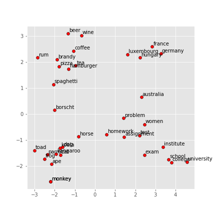
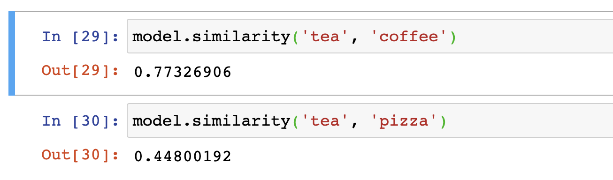
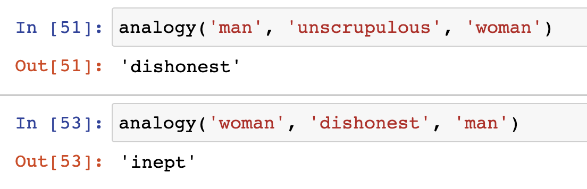

In NLP1, we discussed how to convert a word into a vector with distributional semantics. Also, we demonstrated using pre-trained results to find the synonyms. However, they are more details to consider. Before diving into the neural networks and build a custom system, we present some issues and Stanford’s solution.
Source code: https://github.com/BillMaZengou/nlp_basis -> WordVector.ipynb
Issues of word vectors
Visualisation
Usually, the results of NLP lie on a high dimensional space. (The pre-train result that we used is glove.6B.100d.txt, which is from https://nlp.stanford.edu/projects/glove/) Therefore, accurately visualising the result is impossible. A plausible way is to project the word vectors onto a 2D surface.
def display_pca_scatterplot(model, words=None, sample=0):
import numpy as np
import matplotlib.pyplot as plt
from sklearn.decomposition import PCA
if words == None:
if sample > 0:
words = np.random.choice(list(model.vocab.keys()), sample)
else:
words = [ word for word in model.vocab ]
word_vectors = np.array([model[w] for w in words])
twodim = PCA().fit_transform(word_vectors)[:, :2]
plt.figure(figsize=(6,6))
plt.scatter(twodim[:,0], twodim[:,1], edgecolors='k', c='r')
for word, (x,y) in zip(words, twodim):
plt.text(x+0.05, y+0.05, word) # put labels
Projection of The Results

As you can see, the food and drinks are on the left top corner; countries are on the right top corner; animals are on the left bottom corner; anything related to studies are on the right bottom corner. However, since we forced them to show up on the 2D plane, many distant features may look closer than they suppose to be.
If you inspect the left top corner carefully, tea seems closer to food rather than drinks. If we compute the similarities between the tea and the coffee as well as the tea and pizza, we can see clearly that the tea is a drink.
Real Similarities

Optimisation: Gradient Descent
In the last post, we proposed the cost function, \(J(\theta)\) for Word2vec. Gradient descent is an algorithm to minimise the cost function.
The key idea is to use the negative gradient of \(J(\theta)\) as a direction to take a small step. Iterate the process until we reach the minimum of the cost function. Mathematically,
\[
\theta^{new} = \theta^{old} - \alpha \nabla_{\theta} J(\theta)
\]
where \(\alpha\) is the step size or learning rate. The choice of \(\alpha\) is a trade-off. If \(\alpha\) is small, it may take too many iteration to converge. However, if it is too large, \(\theta\) cannot even converge because of overshooting.
Nevertheless, \(\nabla_{\theta} J(\theta)\) is computationally expensive as the training text sample can contain millions of words.
As the last post mentioned, people normally use Stochastic Gradient Descent. Instead of consider all the words in the text, we consider only a portion of the text around the centre word. This portion is called a window. It may work badly for one window of the words. However, as we iterate through all words, it does converge.
Note The window is normally one of the power numbers of \(2\), like \(32\) or \(64\). They can match the structure of GPU relatively easier.
With the stochastic gradient, as we only compute the gradient of some certain word vectors, \(\nabla_{\theta} J(\theta)\) is large sparse matrix. Therefore, if we use sparse matrix structure instead of dense matrix, we are able to save space of memories.
Probability
in the last post, we mentioned to use softmax function to turn the dot product (cosine similarity) of two vectors into a probability. However, to calculate the probability with softmax function, the computational expense is high. Hence, in standard word2vec, the implementation of the skip-gram model uses negative sampling.
For negative sampling, we need to train binary logistic regressions for a true pair (centre word and word in its context window) versus several noise pairs (the centre word paired with a random word)
The new cost function is
\[
J(\theta) = \frac{1}{T} \sum_{t=1}^{T} J_t(\theta)
\]
\[
J_t(\theta) = -log(\sigma(\mathbf{u_o^T}\mathbf{v_c})) - \sum_{k=1}{K}log(\sigma(\mathbf{u_kT}\mathbf{v_c}))
\]
where we take (K\) negative samples and
\[
\sigma(x) = \frac{1}{1+e^{-x}}
\]
For this cost function, we need to maximise probability that real outside word appears but minimise probability that random words appear around centre word.
\[
P(w) = \frac{U(w)^{\frac{3}{4}}}{Z}
\]
where \(Z\) is for the normalisation and \(U(w)\) is a unigram distribution so that \(P(w_1, w_2) = P(w_1|w_2)P(w_2) \) turns to \(P_{uni}(w_1, w_2) = P(w_1)P(w_2)\). The \(\frac{3}{4}\) is a hyperparameter.
Co-occurrence Vector (TODO)
An alternative approach. It produce a large matrix, but can be reduce the dimension using SVD. More about SVD, we will discuss in later post.
It may compose a vector space such that semantic similarity can be found be inspecting the linear relation between words. E.g.) The vector difference between Swim and Swimmer can be close to the difference between Teach and Teacher
Hybrid of Two Approach (TODO)
Instead of using the co-occurrence probability, use the ratio of the co-occurrence probability can improve the result.
Question About the Symmetry
Recall from the last post, we can do word composition with word vectors. For example,
\[
w_{King} - w_{Man} + w_{Woman} = w_{Queen}
\]
However, it seems the rule is not simply a vector addition.

It is clear that
\[
w_{Unscrupulous} - w_{Man} + w_{Woman} = w_{Dishonest}
\]
and
\[
w_{Dishonest} - w_{Woman} + w_{Man} = w_{Inept}
\]
rather than returning to \(w_{Unscrupulous}\).
Currently, we have two hypotheses. One is that occurs because of the bias of the training sample and the default word2vec algorithm does not have debias approach. The other is that the way to calculate the similarity does not simply use the vector addition or something similar due to the multi-dimension.
Note the hypotheses need verification.
Acknowledgement
The creation of this post is inspired by Datawhale. The learning path is based on Stanford University CS224n: Natural Language Processing with Deep Learning.
Reference
- Bilibili.com. 2020. [online] Available at: https://www.bilibili.com/video/BV1s4411N7fC?t=4725 [Accessed 25 June 2020].
- En.wikipedia.org. 2020. Language Model. [online] Available at: https://en.wikipedia.org/wiki/Language_model [Accessed 27 June 2020].
- Mikolov, T., Sutskever, I., Chen, K., Corrado, G.S. and Dean, J., 2013. Distributed representations of words and phrases and their compositionality. In Advances in neural information processing systems (pp. 3111-3119).
本博客所有文章除特别声明外，均采用 CC BY-SA 3.0协议 。转载请注明出处！